さざえ堂
さざえ堂とは何か。それはお堂の形式の呼称で正式には三匝堂という。 坂東33ヶ所、西国33ヶ所、秩父34ヶ所の霊場の観音像のレプリカ合計100体が安置してあるお堂のことを百体観音堂というのだが、その中でも「入口から入ると一方通行の通路と階段を進む形になっており、ぐるぐる周りながら最上階を経由してそのままぐるぐると降りてくると、同じ通路を通らずに入口とは反対側の出口から出てくる」という（説明下手か）構造になっているお堂のことを、その形態を模してさざえ堂と呼んでいるのだ。
そこをひと巡りすればその全部を巡礼したのと同じご利益があるという実にコンビニエンスなところで、江戸本所の羅漢寺で安永年間に建てられたものが最初で、その頃にはちょっとしたブームにもなっていたらしい。
このさざえ堂、今でも埼玉県児玉町、群馬県太田市、福島県会津若松市の3ヶ所に現存していて、そのいずれもが不思議な空間体験を与えてくれる建築なのだ。
※訂正：現存するさざえ堂はその他にもあるそうです。詳しくはこちらを。
平等山成身院（埼玉県児玉町）
大きな山門を抜けると右手に本堂、正面に小高い山がある。その山の中腹にさざえ堂は建っている。
本堂よりもメイン扱い。
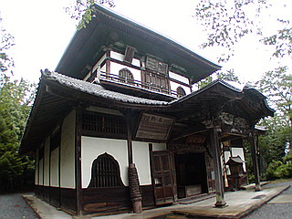
外観は2層だが内部は3階建て。正面入口から入って左周りに1階、2階、3階と進んでいく。
このお堂、小さいながら 正面の破風周りの彫刻や 内部の天井画などの仕上がりが実に素晴しい。
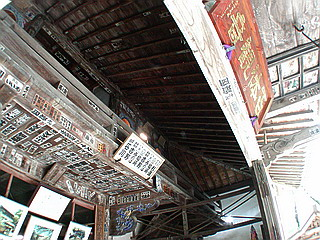 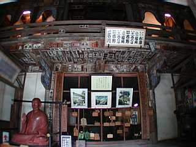
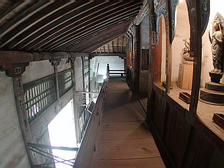 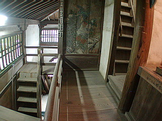
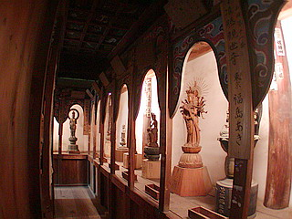 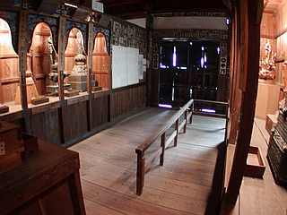
大した予算もなく、近在の人々の布施でつくられたものだけに決して豪華ではないが、センスはいい。
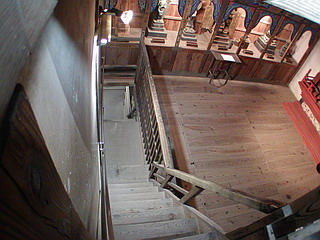 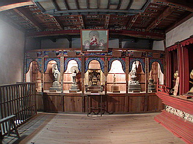
またメインスペースである3階の観音様は青い彫刻が施された中に納められ、一層ゴージャスな雰囲気となっている。明治末期の再建。
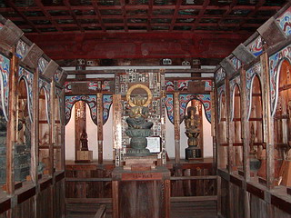 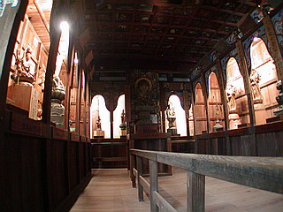
祥寿山曹源寺（群馬県太田市）
群馬県太田市の外れにある曹源寺。
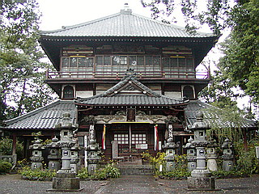 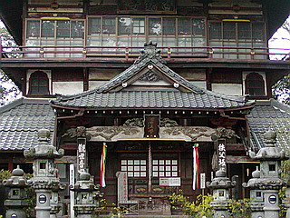
参拝客がたくさん来る呑竜様とは対照的に、訪れる人の少ないひっそりとしたお寺。外からちょっと見ただけでは普通のお寺だ。しかし侮るなかれ、ここが日本最大規模を誇る太田のさざえ堂なのだ。
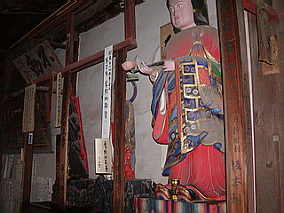
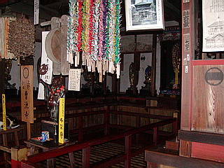 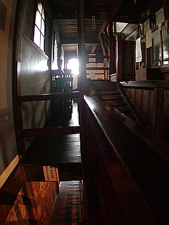
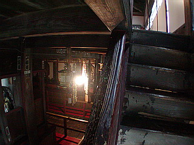
完成は寛政年間、外観、内部構成は児玉のさざえ堂とほぼ同じ。
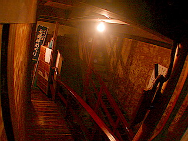 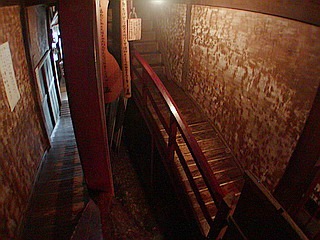
内部にはスロープや太鼓橋などが入り乱れ複雑な造りになっている。
ここの最大のウリは現住職の書いた数々のハリガミである。100の観音様を拝観しながらも気になるのはその途中途中に書いてある住職の説教アンドぼやき。「人生とは・・・」「仏の道とは・・・」など結構ハード系のハリガミがあちこちに貼りつけてあり、100体観音＋説教100発ってな感じでお堂を出るとゲッソリ疲れる。
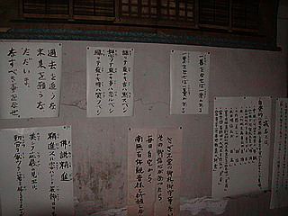
ちなみに拝観時間がハリガミに書いてあるけどあまり当てにはなりません。どちらかというと住職の気の向いた時だけ開けているという古本屋状態ですんで。
正宗寺円通三匝堂（福島県会津若松市）
白虎隊自決の地として有名な飯盛山。その自決の地の隣に建っている異形の塔、ここのさざえ堂は他とはちょっと違う。
前述の児玉と太田のさざえ堂は基本的に同じ形態（プラン）であり、江戸の頃流行ったさざえ堂もほとんどがこの形だったと思われる。
ところが会津若松のさざえ堂は堂内の通路が全てスロープになっていて、しかも他の2件が四角い平面であるのに対して六角搭状の建物なのだ。
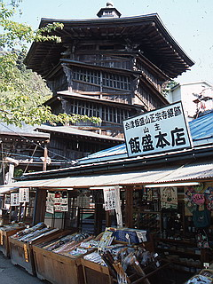 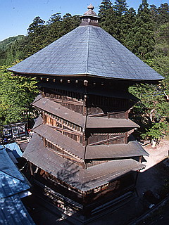
つまり完全に二重の螺旋建築なのである。しかも木造。
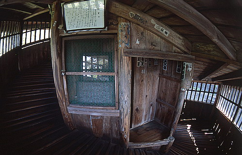
写真をご覧いただけば判るがこのさざえ堂の奇妙な形態は二重の螺旋構造によってもたらされたものである。
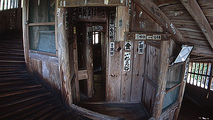
逆にいえばこの建物はそれ以上でもそれ以下でもない純粋な構造のための建築なのだ。
まさに日本の近世建築史から外れたアウトロー建築の王者。
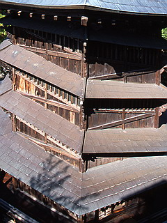
設計は郁堂という僧侶。大工さん大変だったろうなあ。
珍寺大道場 HOME